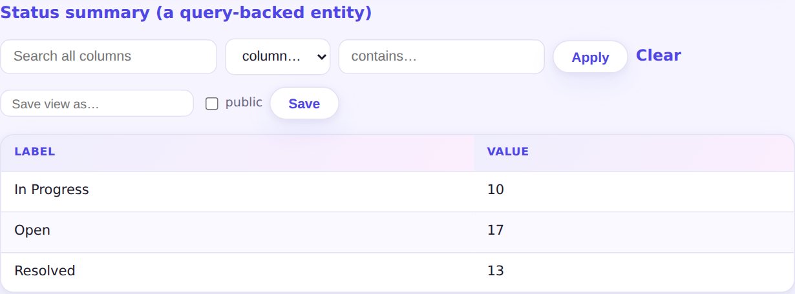

An entity can be backed by a named query instead of a table — the APEX "view" pattern. It's read-only by construction: no table is created, and binding a form to it fails at sync with a clear error. Reports and the JSON API work as usual.
And for entities that do own tables, every deployment now verifies the physical schema against the declared fields: a type mismatch stops startup naming every offending column, instead of failing as a confusing cast error at request time.

$ pgapp examples/helpdesk.pgapp Error: entity 'things' does not match its existing table: - column 'amount' is text in pgapp_data.things but the entity declares integer (expected int4) Fix the markup to match the table, or migrate the table (pgapp adds columns but never changes or drops them).